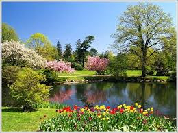

Spring Season
The spring season is a time of year when the weather starts to change.
It is a transition season between the winter and summer seasons.
The days get longer and nights get shorter, the temperature is milder,
and flowers bloom. There is a warm wind in the spring season in the air.
Spring typically begins in March and usually lasts until May or June.

Summer Season
Among the four temperate seasons of the year, summer is the hottest season.
The summer season usually runs between April and july in India, where the days
are considered to be the longer and nights shorter. The weather is hot, humid
and dry during this season, and temperature can rise extremely high in certain
places, as the Earth tilts itself towards the Sun.
Rainy Season
The rainy season or also addressed as the monsoon season is one of the
most awaited seasons of the entire year, bringing relief from the scorching
heat of summer. The rainy season starts in India from the month of June and
continues till August. The rains bring new life into the plants and trees.
Our surroundings look green. Flower blooms, and bring sing happly.

Winter Season
Winter season in India refers to the period between November and February
when the northern hemisphere is inclined away from the sun and hence sun
rays have to travel a longer distance to reach the surface of the earth.
The winter season is a magical time as the weather gets cooler and people,
in general, enjoy the weather around them.